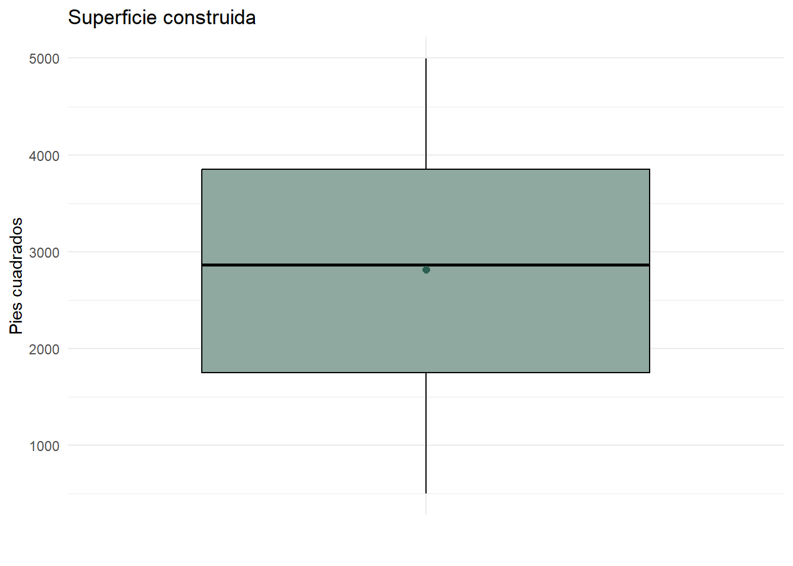
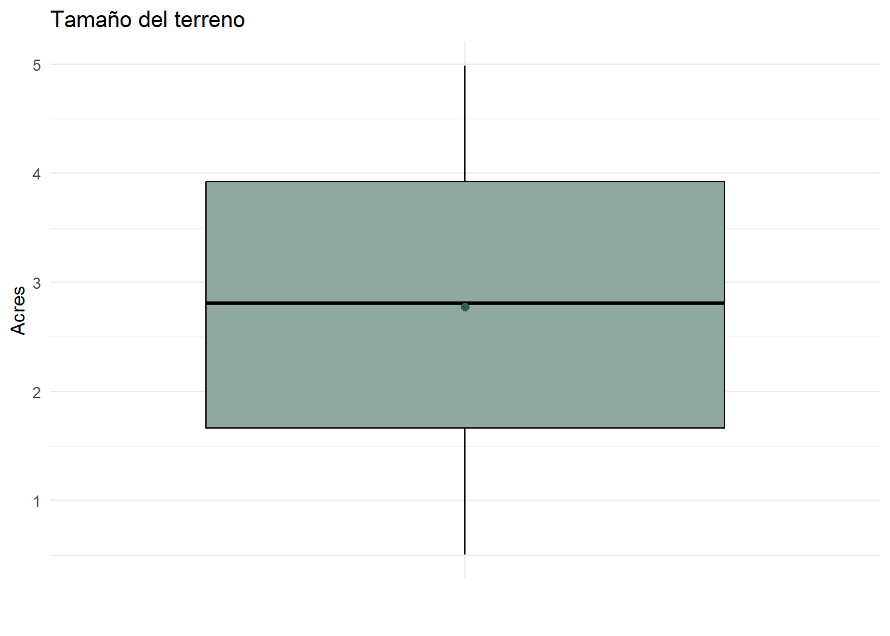
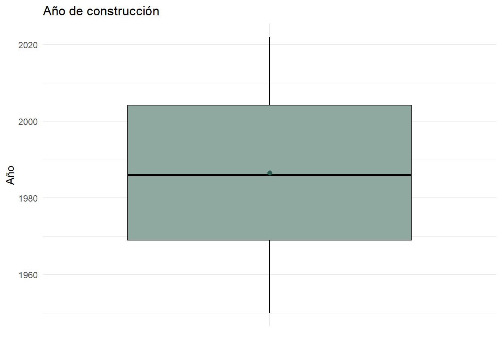

4 Análisis de las variables características (independientes)
Antes de buscar entender qué factores influyen en el precio de la vivienda y evaluar cómo el tamaño del terreno interactúa con el entorno, se hace indispensable analizar las variables características, o también llamadas variables predictoras, del conjunto de datos, con ayuda del uso de tablas de frecuencias, gráficos, estadísticas descriptivas y diagramas de caja según la pertinencia.
Por razones metodológicas, se separan las variables en discretas y continuas:
Variables discretas: representan recuentos ordinales. En este estudio, corresponden a las variables
Num_Bedrooms(número de habitaciones),Num_Bathrooms(número de baños),Garage_Size(capacidad del garaje en vehículos) yNeighborhood_Quality(calidad del vecindario).Variables continuas: representan valores dentro de un rango numérico continuo. En este estudio, corresponden a las variables
Square_Footage(superficie construida en pies cuadrados),Lot_Size(tamaño del terreno en acres) yYear_Built(año de construcción del inmueble).
4.1 Variables discretas
## # A tibble: 5 × 3
## Num_Bedrooms n Porcentaje
## <dbl> <int> <dbl>
## 1 1 201 20.1
## 2 2 215 21.5
## 3 3 182 18.2
## 4 4 197 19.7
## 5 5 205 20.5## # A tibble: 3 × 3
## Num_Bathrooms n Porcentaje
## <dbl> <int> <dbl>
## 1 1 350 35
## 2 2 327 32.7
## 3 3 323 32.3## # A tibble: 3 × 3
## Garage_Size n Porcentaje
## <dbl> <int> <dbl>
## 1 0 321 32.1
## 2 1 336 33.6
## 3 2 343 34.3## # A tibble: 10 × 3
## Neighborhood_Quality n Porcentaje
## <dbl> <int> <dbl>
## 1 1 91 9.1
## 2 2 105 10.5
## 3 3 85 8.5
## 4 4 99 9.9
## 5 5 109 10.9
## 6 6 101 10.1
## 7 7 102 10.2
## 8 8 97 9.7
## 9 9 88 8.8
## 10 10 123 12.3Las cuatro variables discretas muestran una distribución de frecuencias equilibrada entre sus categorías:
En Num_Bedrooms, los cinco niveles (1 a 5 habitaciones) se reparten entre el 18.2% y el 21.5% de las viviendas cada uno.
En Neighborhood_Quality, con diez niveles, mantiene una distribución pareja entre el 8.5% y el 12.3% por categoría, sin concentración en los extremos de la escala (baja o alta calidad) ni en el centro.
Num_Bathrooms y Garage_Size, entretanto, muestran un patrón similar, oscilando entre el 32.3% y 35%; específicamente, a Num_Bathrooms le corresponde entre el 32.3% y 35%, mientras que a Garage_Size entre el 32.1% y 34.3%.
Esta lectura numérica se traduce visualmente en los siguientes gráficos de barras, que permitirán confirmar de un vistazo si la uniformidad detectada en las tablas se sostiene también en su representación gráfica.
p4 <- df %>% count(Num_Bedrooms, name = "n") %>%
ggplot(aes(x = factor(Num_Bedrooms), y = n)) +
geom_col(fill = "#8fa8a0", width = 0.6) +
labs(title = "Habitaciones", x = "Num_Bedrooms", y = "Frecuencia") +
theme_minimal()
p5 <- df %>% count(Num_Bathrooms, name = "n") %>%
ggplot(aes(x = factor(Num_Bathrooms), y = n)) +
geom_col(fill = "#8fa8a0", width = 0.6) +
labs(title = "Baños", x = "Num_Bathrooms", y = "Frecuencia") +
theme_minimal()
p6 <- df %>% count(Garage_Size, name = "n") %>%
ggplot(aes(x = factor(Garage_Size), y = n)) +
geom_col(fill = "#8fa8a0", width = 0.6) +
labs(title = "Garaje", x = "Garage_Size", y = "Frecuencia") +
theme_minimal()
p7 <- df %>% count(Neighborhood_Quality, name = "n") %>%
ggplot(aes(x = factor(Neighborhood_Quality), y = n)) +
geom_col(fill = "#8fa8a0", width = 0.6) +
labs(title = "Calidad del vecindad", x = "Neighborhood_Quality", y = "Frecuencia") +
theme_minimal()
(p4 + p5) / (p6 + p7)
Los cuatro gráficos de barra evidencian que, en general, ninguna de las categorías se distingue por una barra drásticamente más alta que las demás, aunque hay anotaciones a simple vista que vale la pena destacar:
En Num_Bedrooms, la categoría 3 se distingue como la que tiene menor frecuencia de las cinco, mientras que la categoría 2, en contraste, es la más frecuente.
En Num_Bathrooms, la barra de 1 baño es más alta que las otras dos que, a su vez, son casi idénticas entre sí.
En Garage_Size, la barra de 2 vehículos se ubica ligeramente por encima de las demás.
En el caso de Neighborhood_Quality, las categorías 1 a 9 se mantienen dentro de un rango estrecho, pero la categoría 10 (calidad más alta) sobresale, siendo la barra más alta de las diez.
4.2 Variables continuas
En primer lugar, se calcula los estimadores puntuales y medidas de forma para las características cuantitativas de un inmueble.
df %>%
select(Square_Footage, Lot_Size, Year_Built) %>%
pivot_longer(cols = everything(), names_to = "variable", values_to = "valor") %>%
group_by(variable) %>%
summarise(
n = length(valor),
media = mean(valor),
sd = sd(valor),
mediana = median(valor),
RIC = IQR(valor),
Q1 = quantile(valor, 0.25),
Q3 = quantile(valor, 0.75),
minimo = min(valor),
maximo = max(valor),
asimetria = skewness(valor),
curtosis = kurtosis(valor)
)## # A tibble: 3 × 12
## variable n media sd mediana RIC Q1 Q3 minimo maximo asimetria curtosis
## <chr> <int> <dbl> <dbl> <dbl> <dbl> <dbl> <dbl> <dbl> <dbl> <dbl> <dbl>
## 1 Lot_Size 1000 2.78 1.30 2.81 2.26 1.67 3.92 0.506 4.99 -0.0442 1.80
## 2 Square_Footage 1000 2815. 1256. 2862. 2100 1750. 3850. 503 4999 -0.0659 1.87
## 3 Year_Built 1000 1987. 20.6 1986 35.2 1969 2004. 1950 2022 -0.0212 1.81Las 1.000 observaciones están completas para las tres variables continuas.
En Square_Footage, el promedio de superficie construida es de 2.815 pies cuadrados, con el 50% de las viviendas presentando una superficie igual o inferior a 2.862 pies cuadrados (mediana); la cercanía entre ambos valores es un primer indicio de simetría, confirmado por una asimetría de apenas −0.066. La desviación estándar es de 1.256 pies cuadrados y el rango intercuartílico de 2.100: el 50% central de las viviendas se reparte entre los 1.750 (Q1) y los 3.850 (Q3) pies cuadrados, dentro de un rango total que va de 503 (mínimo) a 4.999 (máximo). La curtosis (1.87), al ubicarse por debajo del valor de referencia de 3, presenta una distribución platicúrtica.
En Lot_Size, el tamaño promedio del terreno es de 2.78 acres, con una mediana de 2.81 acres y una asimetría de −0.044 que refuerza, una vez más, la lectura de simetría. La desviación estándar es de 1.30 acres y el rango intercuartílico de 2.26: el 50% central de los terrenos se ubica entre 1.67 (Q1) y 3.92 (Q3) acres, dentro de un rango total de 0.51 (mínimo) a 4.99 acres (máximo). La curtosis (1.80) es inferior a 3, por lo que la distribución también es platicúrtica.
Por último, en Year_Built, el año promedio de construcción es 1986.55, con una mediana de 1986 junto a una asimetría de −0.021, confirmando una distribución simétrica. La desviación estándar es de 20.63 años y el rango intercuartílico de 35.25: el 50% central de las viviendas fue construido entre 1969 (Q1) y 2004 (Q3), dentro de un rango total que va de 1950 (mínimo) a 2022 (máximo). La curtosis (1.81), por debajo de 3, indica una distribución platicúrtica.
A continuación, se construyen diagramas de cajas para contemplar la simetría y detectar valores atípicos en las tres variables continuas.
p1 <- df %>%
ggplot(aes(x = "", y = Square_Footage)) +
geom_boxplot(fill = "#8fa8a0", color = "black",
outlier.color = "#c47b6b", outlier.alpha = 0.6) +
stat_summary(fun = mean, geom = "point", shape = 20, size = 3, color = "#2c5f52") +
labs(title = "Superficie construida", y = "Pies cuadrados", x = "") +
theme_minimal()
p2 <- df %>%
ggplot(aes(x = "", y = Lot_Size)) +
geom_boxplot(fill = "#8fa8a0", color = "black",
outlier.color = "#c47b6b", outlier.alpha = 0.6) +
stat_summary(fun = mean, geom = "point", shape = 20, size = 3, color = "#2c5f52") +
labs(title = "Tamaño del terreno", y = "Acres", x = "") +
theme_minimal()
p3 <- df %>%
ggplot(aes(x = "", y = Year_Built)) +
geom_boxplot(fill = "#8fa8a0", color = "black",
outlier.color = "#c47b6b", outlier.alpha = 0.6) +
stat_summary(fun = mean, geom = "point", shape = 20, size = 3, color = "#2c5f52") +
labs(title = "Año de construcción", y = "Año", x = "") +
theme_minimal()
Se aprecia una caja simétrica, con la mediana (2.862 pies cuadrados) supuerpuesta con respecto al centro de la caja. Además, los bigotes se extienden hasta los valores extremos reales de la variable (503 y 4.999 pies cuadrados), sin que se recorten antes de llegar a ellos; ningún valor cae fuera del límite de 1.5 veces el rango intercuartílico, y los datos se reparten hasta los extremos sin concentrarse cerca de la mediana.

El comportamiento de Lot_Size es un calco del de Square_Footage en su propia escala. Se ve una caja simétrica centrada en 2.81 acres, con la media y la mediana coincidiendo casi exactamente, y bigotes que se extienden hasta el mínimo (0.51) y el máximo (4.99) reales del conjunto de datos. No hay ningún punto marcado como atípico.

La caja es simétrica alrededor de 1986, con la media y la mediana (1986) superpuestas. Los bigotes llegan hasta 1950 y 2022, sin ningún punto marcado por fuera de ese rango.